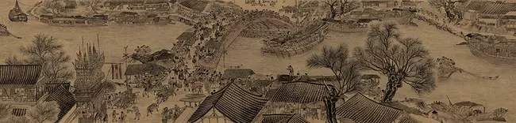

收藏
收藏《三国志》
《三国志》，二十四史之一，是由西晋史学家陈寿所著，记载中国三国时期的曹魏、蜀汉、东吴纪传体国别史，是二十四史中评价最高的“前四史”之一。
当时魏、吴两国已有史书，如官修的王沈《魏书》、私撰的鱼豢《魏略》、官修的韦昭《吴书》，此三书当是陈寿依据的基本材料。
蜀汉无史官一职，故自行采集，仅得十五卷。
陈寿前半生是在蜀汉度过，入仕后，受宦官黄皓排挤而不得志。蜀汉灭亡后，陈寿历任著作郎，晚年多次被贬，屡次受人非议，历经十年艰辛，完成了国别体史学巨著《三国志》。
三国志最早以《魏书》、《蜀书》、《吴书》三书单独流传。为了避免曹魏的《魏书》与北魏的《魏书》相互混淆，北宋王朝在咸平六年（1003年）将三书合为一书，最终成书。因此《三国志》是三国分立时期结束后文化重新整合的产物。此书完整地记叙了自汉末至晋初近百年间中国由分裂走向统一的历史全貌。
《三国志》也是二十五史中最为特殊的一部，因为其过于简略，没有记载王侯、百官世系的“表”，也没有记载经济、地理、职官、礼乐、律历等的“志”，不符合《史记》和《汉书》所确立下来的一般正史的规范。
元末明初，社会矛盾尖锐，农民起义此起彼伏，群雄割据，多年战乱后朱元璋剿灭群雄，推翻元王朝，建立明王朝。期间人民流离失所，罗贯中作为一名杂剧和话本作者，生活在社会底层，了解和熟悉人民的疾苦，期望社会稳定，百姓安居乐业，作为底层的知识分子思考，并希望结束动荡造成的悲惨局面。由此就东汉末年的历史创作了《三国演义》这部历史小说。
《三国演义》是中国古典四大名著之一，全名为《三国志通俗演义》。作者是元末明初小说家罗贯中，是中国第一部长篇章回体历史演义小说。描写了从东汉末年到西晋初年之间近100年的历史风云。全书反映了三国时代的政治军事斗争，反映了三国时代各类社会矛盾的转化，并概括了这一时代的历史巨变，塑造了一批叱咤风云的三国英雄人物。
自《三国演义》问世以来，各式各样的版样层出不穷，明代刻本有20多种，清代刻本也有70多种，在中国民间流传甚广。康熙二十八年，日僧湖南文山编译出版日文本《通俗三国志》之后，朝鲜、日本、印度尼西亚、越南、泰国、英国、法国、俄国等许多国家都对《三国演义》有本国文字的译本，并发表了不少研究论文和专著，对这部小说作出了极高的评价。
《三国演义》（全名为《三国志通俗演义》，又称《三国志传》）是中国古典四大名著之一，亦是中国第一部长篇历史章回小说，作者一般被认为是元末明初的罗贯中。
该书描写了从东汉末年到西晋初年之间近百年的历史风云，反映了三国时代的政治军事斗争以及各类社会矛盾的渗透与转化。其虚实结合，曲尽其妙，是四大名著中唯一根据历史事实改编的小说，被许多人误以为该书内容就是中国三国时期的正史。
《三国志》主要善于叙事，文笔也简洁，剪裁得当，当时就受到赞许。与陈寿同时的夏侯湛写作《魏书》，看到《三国志》也倍加赞赏，认为没有另写新史的必要，竟毁弃了自己本来的著作。
后人更是推崇备至，认为在记载三国历史的史书中，独有陈寿的《三国志》可以同《史记》、《汉书》等相媲美。因此，其他各家的三国史相继泯灭无闻，只有《三国志》还一直流传到今天。
南朝人刘勰在《文心雕龙·史传》篇中讲：“魏代三雄，记传互出，《阳秋》、《魏略》之属，《江表》、《吴录》之类，或激抗难征，或疏阔寡要。唯陈寿《三国志》，文质辨洽，荀（勖）、张（华）比之（司马）迁、（班）固，非妄誉也。”这就是说，那些同类史书不是立论偏激，根据不足，就是文笔疏阔，不得要领。只有陈寿的作品达到了内容与文字表述的统一。
自古以拥长安、洛阳为正统。所以，《三国志》便尊曹魏为正统。在《魏书》中为曹操写了本纪，而《蜀书》和《吴书》则只有传，没有纪。记刘备则为《先主传》，记孙权则称《吴主传》。这是编史书为政治服务的一个例子，也是《三国志》的一个特点。
此外，陈寿在书中表现出品题人物的兴趣。他说曹操是超世之英杰，刘备是英雄，孙策、孙权是英杰，周瑜、诸葛亮、鲁肃是奇才，庞统，程昱、郭嘉、董昭是奇士，董和、刘巴是令士，和洽、常林是美士，徐邈、胡质是彦士，王粲、秦宓是才士，关羽、张飞、程普，黄盖是虎臣，陈震、董允、薛综是良臣，张辽、乐进是良将。